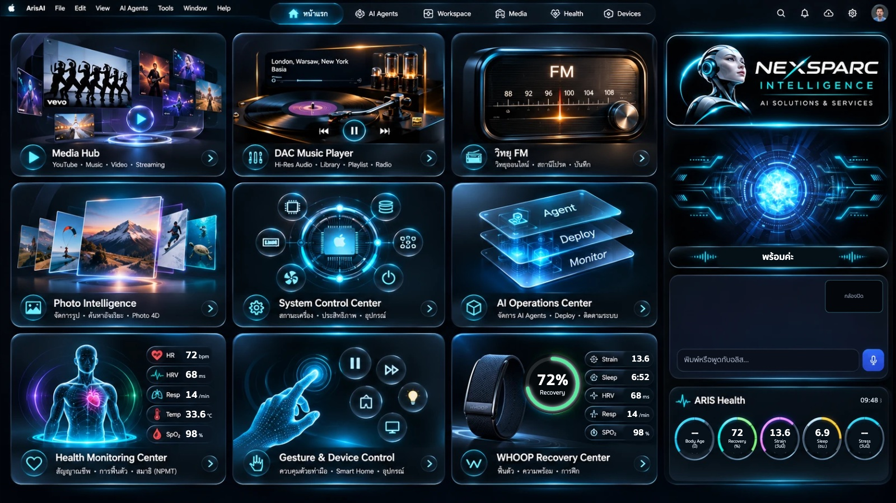
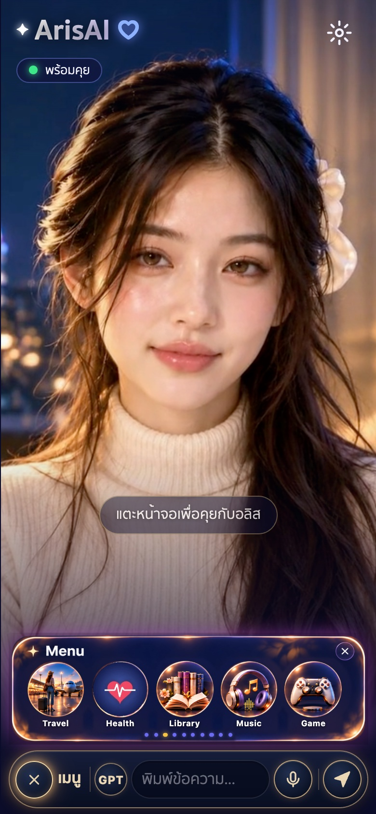

Aris เป็นเพื่อนคู่ชีวิตแบบ AI ที่ช่วยตั้งเป้าหมาย ฝึกจนเห็นผลจริง และจดจำเรื่องสำคัญของคุณได้ยาวนานหลายปี เมื่อเรื่องไหนต้องใช้ความรู้เฉพาะทาง Aris จะทำงานร่วมกับ “เอเจนต์ผู้เชี่ยวชาญ” ให้ โดยคุณคุยกับ Aris คนเดิมตลอด


แต่ละเอเจนต์ออกแบบร่วมกับผู้เชี่ยวชาญหรือแบรนด์ในสาขานั้น และมีขอบเขตคำแนะนำชัดเจน
วางแผนฝึกและติดตามสมรรถภาพ
กิจวัตรสุขภาพระยะยาว
บันทึกมื้ออาหาร ประมาณพลังงาน
วางแผนและช่วยระหว่างทริป
เอเจนต์ในสาขาที่ผู้ใช้สนใจ ร่วมกับผู้เชี่ยวชาญตัวจริง
ตอบไม่เกิน 4 คำถาม ก็เริ่มได้
แล้วมีเป้าหมายต่อเนื่อง 7–14 วัน → 30 วัน → 90 วัน พร้อมหลักฐานความคืบหน้า
ดู แก้ หรือลบได้เสมอ